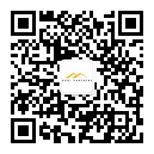

保存微信内容到戈壁项目管理系统！
1、关注公众帐号
扫二维码关注
或者，搜索微信号 gobixzs, 点击关注
2、绑定戈壁项目管理系统帐户到微信
①点击戈壁项目小助手发送的点击这里绑定账户的消息
②输入戈壁项目管理系统的邮箱和密码，点击绑定
3、保存微信内容到戈壁项目管理系统
点击"+"，点击"我的收藏", 点击你需要保存的消息
注： 系统只接受链接消息，不接受文本消息、图片消息、语音消息、视频消息、小视频消息、地理位置消息
系统也不能接受word, ppt, pdf等文件
保存微信内容到戈壁项目管理系统！
注： 系统只接受链接消息，不接受文本消息、图片消息、语音消息、视频消息、小视频消息、地理位置消息
系统也不能接受word, ppt, pdf等文件